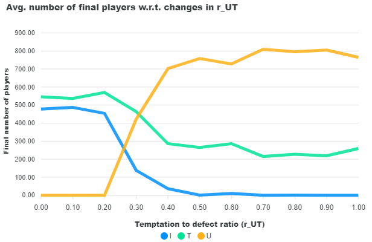
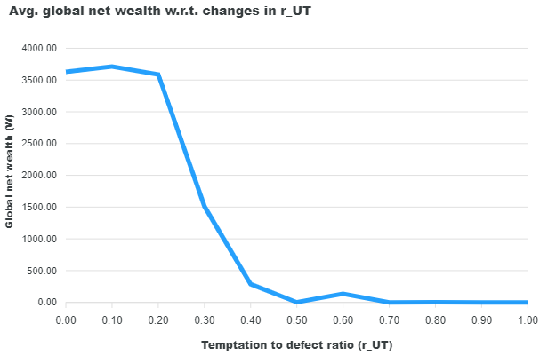

Step 6: Data Merge
Data merge functionality of Crowd allows aggregating simulation results with certain operations.
- Currently supported operations for aggregation:
Mean (average)
Sum
- Available merge methods:
Merge within parent directory
Merge with other simulation
The first option allows aggregating the results of the batches by a user-selected method, such as getting the mean or sum of the results of the user-implemented data collection methods.
In the second option, data across different simulations can be merged, with the restriction of having the same file name and content format. The merge operations are conducted after the simulations conclude, either through the library or the app.
Library
Reminder: As we don’t run multiple simulations in our simplediffusion example, the following examples only demonstrate the merge operations for other projects.
Step 1: Import merge methods from Crowd API
The merge methods are originally implemented in the Project class and can be directly called from a project object by providing the necessary parameters. In this example, instead of creating a new Project object and arranging the simulation directory, we utilize Crowd API’s methods for simplicity.
from crowd.api.merge_methods import MergeMethods
mrg = MergeMethods()
Step 2: Execute the merge method of choice
1. Merge in parent simulation: In this example, we will take the average of all count_node_types in the parent folder and write the results to current simulation’s folder (named as count_node_types_mean.json). The results can be used to draw charts in the results page of Crowd.
"""
Parameters:
- project_name: "firstcustom"
- parent_simulation_dir: "2024-08-22=10-35"
- simulation_dir: "1"
- json_file_name: "count_node_types.json"
- merge_method: "mean"
"""
mrg.merge_in_parent_sim("firstcustom", "2024-08-22=10-35", "1", "count_node_types.json", "mean")
2. Merge with other simulation: In this example, we merge the data from after_simulation_mean.json file of 3 simulations. The results will be saved in a file named: after_simulation_mean_merged_{date}.json.
"""
Parameters:
- project_name: "firstcustom"
- parent_simulation_dir: "2024-08-22=10-35"
- simulation_dir: "1"
- json_file_name: "after_simulation_mean.json"
- merge_dir_list: [...]
"""
mrg.merge_with_other_sim("firstcustom", "2024-08-22=10-35", "1", 'after_simulation_mean.json',
[
'2024-08-22=11-05/1',
"2024-08-22=11-33/1",
"2024-08-22=12-01/1"
])
In the following block, we provide the resulting JSON: Contents of “after_simulation_mean” from each simulation is placed on the same file.
[
{
"r_UT": 0.0,
"T": 546.0,
"I": 478.0,
"U": 0.0,
"Wealth": 3629.577
},
{
"r_UT": 0.1,
"T": 537.0,
"I": 487.0,
"U": 0.0,
"Wealth": 3712.755
},
{
"r_UT": 0.2,
"T": 570.0,
"I": 454.0,
"U": 0.0,
"Wealth": 3587.373
}
]
This data can later be used to draw the following charts:
 {kind=link}
{kind=link}
App
Next: Step 7: Generate charts